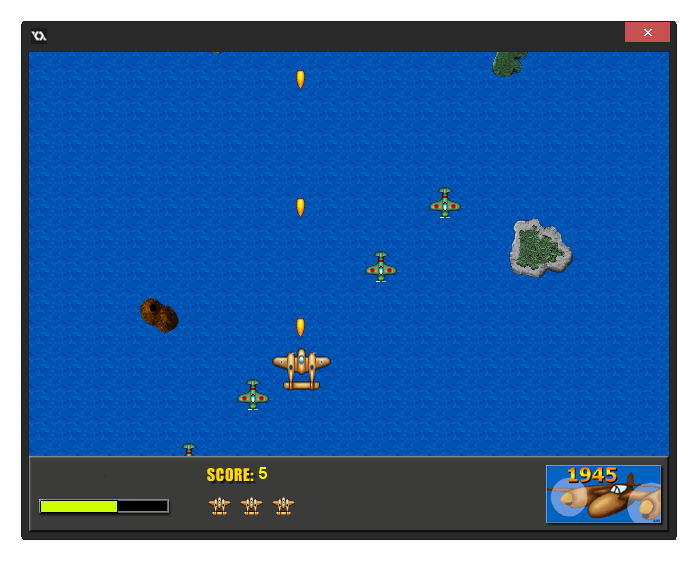

Tutorial
Page 4 of 9
Scrolling Backgrounds

A scrolling shooter gets its name from the fact that the game world scrolls over the screen, normally either from top to bottom or from right to left. This gives the illusion of motion, although the only thing
actually moving is the background image. In the game "1945" the world scrolls vertically, so even though the plane the player controls actually stands still on the screen you get the impression that it is flying over
a rolling sea.
Well, the plane doesn't exactly stand still... The player will be able to control the plane and move it around the room, but it will not scroll along with the background. Moving the plane around over the scrolling
background gives the impression of the plane speeding up when it moves forwards, or slowing down when it moves backwards, and it is crucial that the plane does not move faster backwards than the background
scrolls, as this would give the illusion that the plane is flying backwards, which is of course impossible.
So how do we create a scrolling background in GameMaker? There are actually two possibilities. The first and easiest possibility is to use a tiling background image that moves downwards through the room.
The second, more complicated, way is to build a much larger room but only show part of the room using a so-called view. This view then moves slowly upwards, revealing only a part of the room to the player
at a time. To keep things simple in this tutorial and to get you used to some of the things that GameMaker can do, we are going to do the former method, but there is a "Scrolling Shooter - Part 2" tutorial
that shows how to use views and expands on some of the concepts shown in this tutorial.
Adding A Background
As our game takes place over the sea we need a background image that looks like a sea as viewed from above. So let's add the following small image as a background resource to the game and
give it the name bck_Water:
Adding a background was covered in the "My First Game" tutorial, but if you haven't done this we'll briefly review the process:
- Left click on the "Backgrounds" folder in the resource tree
- Select "Add background"
- Browse to the "Scrolling Shooter Assets" folder, normally located in "%localappdata%/GameMaker-Studio/Tutorials/02 - Scrolling Shooter - Part 1" and select the "water.png" image.
Filling the room background with this tile will give a nice looking sea for our player to fly their plane over.
Creating The Room
To create a room with a moving background, add a room to the game in the way shown in the "My First Game" tutorial (right click the "Rooms" folder, then "Add Room"). You will see a series of tabs
on the left side of the Room Editor window, one of which is "Settings". Click that tab now, and change the room name to "rm_MainGame", but change nothing else as the rest of the default values
are perfect. Now click on the tab labelled backgrounds, and we need to change four settings here.
First of all, because we are going to fill the whole room with the background image we do not need to draw the background colour, so un-check the box labelled Draw background colour. This is
important, as you should always try to keep performance optimal in your game and, in this case, drawing a background colour that you will not see because you are going to draw something else over it is a waste of
processing power.
Next we need to actually enable our background and tell GameMaker to actually draw it on the screen. To do this, click the "Visible when room starts" check-box.
The third thing to do is tell GameMaker which background to draw, so click on the menu icon (next to the text that says "<no background>" and select the bck_Water
background image that you added previously. The default setting for the Room Editor is to tile the whole room with it, which is what we want, so you can leave the tile options as they are.
Finally, we need to make the background move! this is easily done since the Room Editor provides you with two fields where you can set the vertical and horizontal scroll speed for the image. These can be found at the
bottom of the Backgrounds tab, called Hor. speed and Vert. speed. When setting these values, bare in mind that the GameMaker room coordinates place (0,0) in the top left
corner of the screen, and going down the room increments the y value, and going across the room increments the x value. So, to make our background scroll, we need to set the Vert. speed to 2, as this will
add 2 pixels onto the vertical position every game step, making it appear to move down the screen.
The Room Editor tab should now look like this:
Although we have done very little so far, you can run the game to verify that we have a scrolling background that gives the illusion of motion. Notice that the player will think that you have an "infinite" scrolling room,
when in reality you have a single, small room!
© Copyright YoYo Games Ltd. 2015 All Rights Reserved